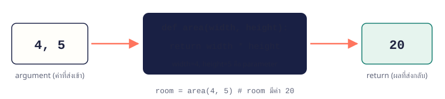

เมื่อจบบทนี้ นิสิตจะทำได้สร้างฟังก์ชันด้วย def ส่งค่าผ่าน parameter รับผลด้วย return และแบ่งโปรแกรมเป็นฟังก์ชันย่อยได้
8.1 def: สร้างฟังก์ชัน
ฟังก์ชันคือชุดคำสั่งที่มีชื่อ สร้างครั้งเดียวด้วย def ชื่อ(): แล้วเรียกใช้กี่ครั้งก็ได้ด้วย ชื่อ() โค้ดในฟังก์ชันจะยังไม่ทำงานจนกว่าจะถูกเรียก

ฟังก์ชันเหมือนเครื่องจักร: รับค่าเข้าทาง parameter ประมวลผล แล้วส่งผลกลับด้วย returntopic_8_1.py
def greet():
print("สวัสดี")
print("ยินดีต้อนรับ")
greet()
greet()
ผลลัพธ์สวัสดี
ยินดีต้อนรับ
สวัสดี
ยินดีต้อนรับ
8.2 parameter: ส่งค่าเข้าฟังก์ชัน
ใส่ชื่อในวงเล็บตอน def (parameter) แล้วส่งค่าจริงตอนเรียก (argument) กำหนดค่าเริ่มต้นได้ เช่น vat=0.07 ถ้าไม่ส่งมาจะใช้ค่านั้น
topic_8_2.py
def greet(name, greeting="สวัสดี"):
print(f"{greeting} {name}")
greet("Hobi")
greet("SUGA", "หวัดดี")
greet(greeting="Hello", name="RM")
ผลลัพธ์สวัสดี Hobi
หวัดดี SUGA
Hello RM
8.3 return: ส่งผลกลับ
return ส่งค่ากลับไปให้ผู้เรียกนำไปใช้ต่อ เช่น เก็บในตัวแปรหรือคำนวณต่อ ต่างจาก print ที่แค่แสดงบนจอ
topic_8_3.py
def area(width, height):
return width * height
room = area(4, 5)
total = room + area(2, 3)
print(room, total)
จำง่าย ๆเมื่อเจอ return ฟังก์ชันจบทันที คำสั่งที่อยู่หลัง return จะไม่ทำงาน
8.4 ตัวแปรในฟังก์ชันเป็นของฟังก์ชัน
ตัวแปรที่สร้างในฟังก์ชัน (local) ใช้ได้เฉพาะในฟังก์ชันนั้น ข้างนอกมองไม่เห็น ให้ส่งค่าเข้าทาง parameter และส่งออกทาง return
topic_8_4.py
def double(n):
result = n * 2
return result
answer = double(21)
print(answer)
# print(result) ← NameError เพราะ result อยู่ในฟังก์ชันเท่านั้น
ตัวอย่างโปรแกรม
ตัวอย่าง 8.1แปลงคะแนนเป็นเกรด
แยกกติกาตัดเกรดเป็นฟังก์ชัน แล้วเรียกใช้กับหลายคะแนน
example_8_1.py
def to_grade(score):
if score >= 80:
return "A"
elif score >= 70:
return "B"
elif score >= 60:
return "C"
elif score >= 50:
return "D"
return "F"
for score in [85, 72, 49]:
print(score, "→", to_grade(score))
ผลลัพธ์85 → A
72 → B
49 → F
อธิบาย- ฟังก์ชันรับคะแนน 1 ค่า แล้วคืนเกรดเป็นข้อความ
return จบฟังก์ชันทันที จึงไม่ต้องใช้ else ที่บรรทัดสุดท้าย- เขียนกติกาครั้งเดียว ใช้ซ้ำได้ทุกคะแนน
ตัวอย่าง 8.2แบ่งโปรแกรมใบเสร็จเป็นฟังก์ชัน
แต่ละฟังก์ชันทำหน้าที่เดียว: คำนวณ, ใส่ VAT, จัดรูปแบบ
example_8_2.py
def subtotal(price, qty):
return price * qty
def add_vat(amount, rate=0.07):
return amount * (1 + rate)
def baht(amount):
return f"{amount:,.2f} บาท"
price = float(input("ราคา: "))
qty = int(input("จำนวน: "))
before = subtotal(price, qty)
print("ก่อน VAT", baht(before))
print("รวม VAT", baht(add_vat(before)))
ผลลัพธ์ · ตัวที่ขีดเส้นใต้คือค่าที่ผู้ใช้พิมพ์ราคา: 65.5
จำนวน: 3
ก่อน VAT 196.50 บาท
รวม VAT 210.26 บาท
อธิบาย- แต่ละฟังก์ชันสั้นและทดสอบแยกกันได้
add_vat มีค่าเริ่มต้น rate=0.07 เปลี่ยนได้โดยไม่ต้องแก้ฟังก์ชัน- ส่วนล่างอ่านเหมือนขั้นตอนงาน เพราะรายละเอียดอยู่ในฟังก์ชันแล้ว
แบบฝึกหัดท้ายบท
เรียงจากง่ายไปยาก ลองเขียนเองให้ได้ผลลัพธ์ตรงตัวอย่างก่อน แล้วค่อยเปิดเฉลย
ระดับความยาก: ง่าย ปานกลาง ท้าทาย
ข้อ 8.1ฟังก์ชันพื้นที่วงกลมง่าย
เขียนฟังก์ชัน circle_area(r) คืนพื้นที่วงกลม (π × r²) โดยใช้ π = 3.14159 แล้วทดสอบกับรัศมี 5
เข้าใจโจทย์- โจทย์ให้
- รัศมี 5
- ต้องหา
78.54
วิธีคิดdef circle_area(r):return 3.14159 * r * r- เรียกใช้แล้วแสดงผลทศนิยม 2 ตำแหน่ง
แนวคำตอบและเหตุผล
ฟังก์ชันคืนตัวเลข ส่วนการจัดรูปแบบทำตอนแสดงผล ทำให้ฟังก์ชันนำไปคำนวณต่อได้
ex_8_1.py
def circle_area(r):
return 3.14159 * r * r
print(f"{circle_area(5):.2f}")
ข้อ 8.2ฟังก์ชันตรวจเลขคู่ง่าย
เขียนฟังก์ชัน is_even(n) คืน True ถ้าเป็นเลขคู่ แล้วทดสอบกับ 4 และ 7
เข้าใจโจทย์- โจทย์ให้
- ตัวเลข 4 และ 7
- ต้องหา
4 True และ 7 False
วิธีคิด- คืนผลการเปรียบเทียบได้โดยตรง:
return n % 2 == 0 - เรียกใช้ 2 ครั้ง
ตัวอย่างผลลัพธ์4 True
7 False
แนวคำตอบและเหตุผล
ผลของ n % 2 == 0 เป็น bool อยู่แล้ว ไม่ต้องเขียน if เพื่อ return True/False
ex_8_2.py
def is_even(n):
return n % 2 == 0
print(4, is_even(4))
print(7, is_even(7))
ข้อ 8.3แปลงอุณหภูมิทั้งสองทางปานกลาง
เขียน c_to_f(c) และ f_to_c(f) แล้วทดสอบว่า 100°C → °F และแปลงกลับได้ 100 เท่าเดิม
เข้าใจโจทย์- โจทย์ให้
- สูตร F = C × 9/5 + 32 และ C = (F − 32) × 5/9
- ต้องหา
100 C = 212.0 F และ 212.0 F = 100.0 C
วิธีคิด- เขียนฟังก์ชันละสูตร
- นำผลของฟังก์ชันแรกส่งเข้าฟังก์ชันที่สอง
- ใส่วงเล็บ
(f - 32) ให้ลบก่อนคูณ
ตัวอย่างผลลัพธ์100 C = 212.0 F
212.0 F = 100.0 C
แนวคำตอบและเหตุผล
เพราะใช้ return จึงส่งผลของฟังก์ชันหนึ่งเข้าอีกฟังก์ชันได้ ถ้าใช้ print แทนจะทำแบบนี้ไม่ได้
ex_8_3.py
def c_to_f(c):
return c * 9 / 5 + 32
def f_to_c(f):
return (f - 32) * 5 / 9
f = c_to_f(100)
print(f"100 C = {f} F")
print(f"{f} F = {f_to_c(f)} C")
ข้อ 8.4ส่วนลดแบบมีค่าเริ่มต้นปานกลาง
เขียน discount(price, percent=10) คืนราคาหลังลด แล้วทดสอบโดยไม่ส่ง percent และส่ง percent = 25
เข้าใจโจทย์- โจทย์ให้
- ราคา 800
- ต้องหา
720.0 และ 600.0
วิธีคิด- ใส่
percent=10 ใน def - คำนวณ
price * (1 - percent / 100) - เรียกแบบส่งและไม่ส่ง percent
ตัวอย่างผลลัพธ์720.0
600.0
แนวคำตอบและเหตุผล
ค่าเริ่มต้นทำให้กรณีปกติเรียกง่าย แต่ยังปรับได้เมื่อต้องการ
ex_8_4.py
def discount(price, percent=10):
return price * (1 - percent / 100)
print(discount(800))
print(discount(800, 25))
ข้อ 8.5ฟังก์ชันสรุปคะแนนท้าทาย
เขียน summarize(scores) คืนค่า 3 ค่า (ค่าเฉลี่ย, สูงสุด, ต่ำสุด) แล้วรับผลมาแยกเป็น 3 ตัวแปร
เข้าใจโจทย์- โจทย์ให้
- คะแนน
[67, 82, 75, 91, 58] - ต้องหา
เฉลี่ย 74.6 สูงสุด 91 ต่ำสุด 58
วิธีคิดreturn a, b, c คืนหลายค่าในรูป tuple- รับด้วย
avg, high, low = summarize(...)
ตัวอย่างผลลัพธ์เฉลี่ย 74.6 สูงสุด 91 ต่ำสุด 58
แนวคำตอบและเหตุผล
Python คืนหลายค่าโดยรวมเป็น tuple และแยกออกได้ด้วย unpacking ที่เรียนในบทที่แล้ว
ex_8_5.py
def summarize(scores):
avg = sum(scores) / len(scores)
return avg, max(scores), min(scores)
avg, high, low = summarize([67, 82, 75, 91, 58])
print(f"เฉลี่ย {avg:.1f} สูงสุด {high} ต่ำสุด {low}")
ข้อ 8.6เครื่องคิดเงินทอนท้าทาย
เขียนฟังก์ชัน make_change(amount) คืน dict จำนวนเหรียญ/ธนบัตร 100, 20, 10, 5, 1 ที่ใช้ทอนเงินให้ได้จำนวนชิ้นน้อยที่สุด
เข้าใจโจทย์- โจทย์ให้
- เงินทอน 287 บาท
- ต้องหา
{100: 2, 20: 4, 10: 0, 5: 1, 1: 2}
วิธีคิด- วนผ่าน list ชนิดเงินจากมากไปน้อย
- ใช้
// หาจำนวนชิ้น และ % หาเงินที่เหลือ - เก็บผลใน dict แล้ว return
ตัวอย่างผลลัพธ์{100: 2, 20: 4, 10: 0, 5: 1, 1: 2}
แนวคำตอบและเหตุผล
ฟังก์ชันรวมความรู้หลายบท: ลูป, // กับ %, และ dict ผลลัพธ์อยู่ในรูปข้อมูลจึงนำไปแสดงผลแบบไหนก็ได้
ex_8_6.py
def make_change(amount):
result = {}
for coin in [100, 20, 10, 5, 1]:
result[coin] = amount // coin
amount %= coin
return result
print(make_change(287))